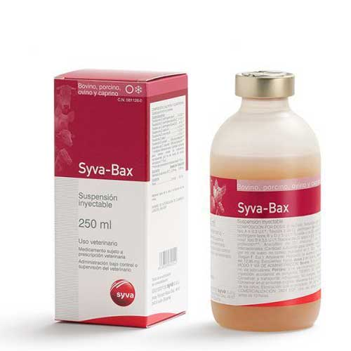

واکسن چندظرفیتی آنتروتوکسمی، سیوا – اسپانیا
📝ترکیب:
ترکیب در هر دوز 2 یا 5 میلی لیتری:
| * | 0.3 I.U. | ≤ | α toxoid of Cl. Perfringens type A |
| * | 10 I.U. | ≤ | β toxoid of Cl. perfringens types B and C |
| * | 5 I.U. | ≤ | ε toxoid of Cl. perfringens types B and D |
| * | 2.5 I.U. | ≤ | α toxoid of Cl. septicum |
| * | 3.5 I.U. | ≤ | α toxoid of Cl. novyi type B |
| * | 2.5 I.U. | ≤ | Cl. tetani toxoid |
| ** | 100 % protection | Cl. sordellii toxoid | |
| ** | 100 % protection | Cl. chauvoei concentrate |
*واحد بین المللی. مقدار موثر برای ایجاد سطوح آنتی بادی های خنثی کننده در هر میلی لیتر از سرم خرگوش نشان داده شده در فارماکوپه اروپا
**سطح محافظت کننده در خوکچه هندی ( مطابق با فارماکوپه اروپا )
📝ادجوانت:
هیدروکسید آلومینیوم 5.18 میلی گرم در دوز 2 میلی لیتری
هیدروکسید آلومینیوم 12.95 میلی گرم در دوز 5 میلی لیتری
📝موارد مصرف:
واکسن سیوا بکس | Syva-Bax ایجاد ایمنی فعال در گاو، گوسفند و بز علیه بیماری های زیر:
– بیماری انتروتوکسمی و Yellow lamb disease ناشی از کلستریدیوم پرفرینجنس تیپ A در بره ها و گوساله های جوان
– بیماری انتریت خونریزی دهنده بره ها ناشی از کلستریدیوم پرفرینجنس تیپ B در بره ها و گوساله های جوان
– بیماری تورم روده نکروتیک و بیماری Struck ناشی از کلستریدیوم پرفرینجنس تیپ C در گوسفندان بالغ و گوساله ها
– بیماری انتروتوکسمی یا قلوه نرمی (Pulpy kidney) ناشی از کلستریدیوم پرفرینجنس تیپ D در همه سنین در هنگام تغییر جیره
– بیماری Braxy و ادم بدخیم ناشی از کلستریدیوم سپتیکوم
– بیماری هپاتیت نکروز دهنده عفونی یا قانقاریای کبدی (Black Disease) ناشی از کلستریدیوم نوویی تیپ B
– بیماری شاربن علامتی ناشی از کلستریدیوم شوه ای
– بیماری کزاز ناشی از کلستریدیوم تتانی
– انتروتوکسمی ناشی از کلستریدیوم سوردلی
📝برنامه واکسیناسیون:
◽️ گوساله ، بره و بزغاله:
اولین واکسیناسیون در دو نوبت به فاصله 4 هفته انجام می شود. توصیه می شود در نوزادان متولد شده از مادران واکسینه نشده اولین دوز واکسن در هفته دوم تولد (دوز دوم در 6 هفتگی) تزریق شود و در نوزادان متولد شده از مادران واکسینه اولین دوز تزریق در هفته 12 (دوز دوم در 16 هفتگی) انجام شود.
واکسن یادآور: هر 6 ماه یک بار
◽️ بالغین:
اولین واکسیناسیون دو نوبت به فاصله 4 هفته
واکسن یادآور: هر 6 ماه یک بار
◽️ در هنگام آبستنی:
دو دوز از واکسن به ترتیب در 8 هفته و 4 هفته قبل از زمان پیش بینی شده برای زایمان، تزریق شود.
ایجاد ایمنی فعال در مادران آبستن، انتقال ایمنی غیر فعال به دام های جوان در 3 ماه اول زندگی را تضمین می کند.
انتقال ایمنی غیر فعال به مادران واکسینه شده از طریق خوراندن میزان مناسب آغوز در ساعات اولیه بعد از تولد بدست می آید.
ایمنی علیه انتروتوکسمی ناشی از کلستریدیوم سوردلی و شاربن علامتی ناشی از کلستریدیوم شوه ای دو هفته بعد از تزریق دومین دوز واکسن ایجاد می شود. ولی در سایر بیماری های اشاره شده ایمنی بعد از 3 هفته ایجاد می شود.
📝مقدار و نحوه مصرف:
قبل از مصرف ویال واکسن را به خوبی تکان دهید.
گاو: 5 میلی لیتر بصورت زیر پوستی
گوسفند و بز: 2 میلی لیتر بصورت زیر پوستی
📝موارد احتیاط:
فقط در حیوانات سالم تزریق شود.
شرایط معمول بهداشتی در حین تزریق رعایت گردد.
در موارد تزریق اتفاقی به خود بلافاصله همراه با بروشور محصول به پزشک مراجعه شود.
فقط برای مصرف دامپزشکی
تنها با نسخه دامپزشک تجویز گردد.
📝عوارض جانبی:
واکنش های ازدیاد حساسیت می تواند بعد از تزریق واکسن رخ دهد. در چنین مواردی درمان با آنتی هیستامین و کورتیکواستروئید ها توصیه می شود. در صورت بروز علائم جدی و سایر مواردی که در اینجا ذکر نشده است حتما دامپزشک را در جریان قرار دهید.
📝تداخل با سایر محصولات دامپزشکی:
اطلاعاتی در مورد ایمنی و اثر بخشی این واکسن هنگامی که با سایر محصولات دامپزشکی استفاده می شود در دست نمی باشد.
تصمیم در مورد استفاده از این واکسن قبل یا بعد از استفاده از هرگونه محصول دامپزشکی نیاز به بررسی موردی دارد.
📝مصرف بیش از اندازه:
در آزمایشات بی خطری، تزریق بیش از 2 برابر دوز توصیه شده هیچ علائم سویی نشان نداده است.
📝ناسازگاری ها:
واکسن سیوا بکس | Syva-Bax با سایر محصولات ایمونولوژیکی دامپزشکی مخلوط نشود.
📝موارد احتیاط ویژه برای محصولات استفاده نشده یا زباله های ایجاد شده:
محصول باز شده استفاده نشده و یا باقی مانده واکسن را از طریق جوشاندن، دفن کردن یا غوطه ور سازی در ماده ضدعفونی مناسب تایید شده توسط مراجع قانونی از بین ببرید.
📝شرایط ویژه نگهداری:
در دمای یخچال (2 تا 4 درجه سلسیوس) نگهداری و حمل و نقل شود.
دور از نور نگهداری شود.
در جعبه اصلی نگهداری شود.
از یخ زدگی جلوگیری شود.
📝شرکت تولید کننده:
سیوا – اسپانیا